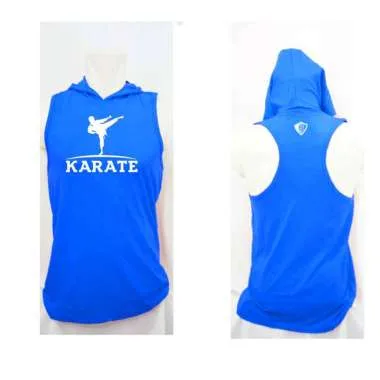

Karate
IDR 250k
Jersey 1
IDR 250k
T
Ukuran Lapangan Karate
Luas lapangan
Lantai seluas 8 x 8 meter, beralas papan atau matras di atas panggung dengan ketinggian 1 meter dan ditambah daerah pengaman berukuran 2 meter pada tiap sisi. Arena pertandingan harus rata dan terhindar dari kemungkinan menimbulkan bahaya.:
Aturan Skor Dan Pertandingan
a) Kompetitor tidak dapat memilih siapa yang mereka ingin atau tidak ingin lawan. b) Pertandingan harus selalu dipilih secara acak, namun tunjangan tertentu dapat diberikan kepada peserta dari sekolah atau tim yang sama yang dipertandingkan pada putaran pertama kompetisi. Mereka mungkin dipisahkan secara acak satu sama lain di babak pertama jika memungkinkan. c) Pada divisi pemuda Sabuk Hitam ke-10 ke atas, para peserta, putra dan putri harus diurutkan berdasarkan tinggi badan (yang terkecil hingga yang tertinggi) dan dibagi menjadi divisi tinggi dan pendek. d) Promotor dapat memilih untuk membagi atau tidak membagi UBB Putra dan/atau Putri menjadi divisi pendek dan tinggi. e) Penentuan divisi tinggi dan pendek adalah untuk alasan keamanan, bukan sekedar membagi divisi secara merata. f) Pembagian ukuran yang sebenarnya harus ditemukan untuk menentukan pesaing yang lebih tinggi dari pesaing yang lebih pendek. g) Setelah pembagian tinggi dan pendek ditentukan berdasarkan tinggi badan, tentukan siapa melawan siapa dengan undian acak. h) Pertimbangan harus diberikan kepada peserta yang berasal dari sekolah atau tim yang sama yang telah diundi untuk bertarung satu sama lain di babak pertama. i) Pemenang divisi kecil dan tinggi akan bertanding dalam satu babak pertandingan berdurasi 2 menit untuk menentukan juara umum kelompok umur dan jenis kelamin tersebut.
Nilai Poin Dan Aturan Pemenang
a) Semua teknik tangan sah yang mendapat skor akan diberikan satu (1) poin. b) Semua teknik tendangan sah yang menghasilkan skor akan diberikan dua (2) poin. c) Semua tendangan lompat berputar ke kepala akan diberikan (3) poin. d) Semua poin penalti akan diberikan satu (1) poin. e) Peserta yang unggul 7 poin (aturan penyebaran 7 poin) sebelum jangka waktu dua menit berakhir secara otomatis dinyatakan sebagai pemenang atau siapa pun yang unggul pada akhir waktu dua menit dinyatakan sebagai pemenang. f) Semua pertandingan kejuaraan besar Divisi memiliki waktu berjalan dua menit dengan Aturan Penyebaran 10 Poin, tetapi harus dimenangkan dengan 2 poin. g) Semua pertandingan Kejuaraan Besar Sabuk Hitam dan Kejuaraan Besar Keseluruhan, peserta harus menang dengan selisih dua poin
Peraturan Penalti
Seorang pesaing tidak dapat terkena penalti dan tetap menerima poin pada panggilan yang sama. Seorang kompetitor dapat menerima satu poin untuk teknik yang tepat dan satu poin lagi dari keputusan penalti terhadap kompetitornya. Jika, menurut pendapat wasit dan/atau petugas medis, seorang peserta tidak dapat melanjutkan pertandingan karena cedera yang disebabkan oleh serangan yang dihukum secara tidak sah yang dilakukan oleh pesertanya, peserta yang melanggar akan didiskualifikasi secara otomatis. Peserta yang cedera tidak dapat melanjutkan lomba.
Gallery
